Rules of Luxury Pizza Toppings
The 2-to-3 Star Rule
Pick one Lead Star, one Supporting Cheese/ Veg, and one Post-Oven Finisher. Overloading drowns flavor contrast and steams the center soggy.
Moisture Control & Contrast
Wipe excess marinade oil dry, pre-render thick pork, keep delicate cured meats and fresh cream cheeses strictly post-oven, and always pair opposites (hot/cold, salty/hot-honey, rich fat/bright lemon zest).
Smoked Marinated Turkey Bacon (Reconstructed Master Formula)
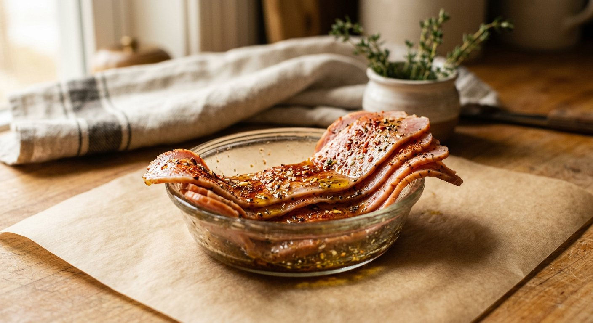
Base Formula (Per 200 g Thin Turkey Bacon Slices)
Whisk 1.5 tbsp olive oil, 1 tsp smoked paprika, ½ tsp garlic powder, ½ tsp freshly ground black pepper, ½ tsp dried thyme/oregano, ¼ tsp red chili flakes, ½ tsp brown sugar (or honey), plus 1 tiny pinch salt only if low-sodium. Massage onto slices and refrigerate airtight 4–12 hours (max 24h).
Pre-Bake Prep
Blot excess surface oil clean on paper towels! If raw, flash-sear 30–45 seconds per side in a dry hot pan first. Use 50–70 g per pizza over cheese, then finish post-oven with Hot Honey and fresh thyme.
Three Test Variations (Per 200 g Turkey)
- 1. Classic Italian: 1.5 tbsp olive oil + 1 small mashed garlic clove + 1 tsp black pepper + ½ tsp thyme + ¼ tsp crushed rosemary + ½ tsp lemon zest.
- 2. Smoky & Spicy: 1.5 tbsp olive oil + 1.5 tsp smoked paprika + ½ tsp garlic powder + ½ tsp chili flakes + 1 tsp brown sugar + ½ tsp black pepper.
- 3. Sweet Heat: 1 tbsp olive oil + 1 tsp honey + 1 tsp smoked paprika + ¼–½ tsp chili flakes + ½ tsp black pepper + ½ tsp garlic powder + ½ tsp apple cider vinegar/lemon juice.
Artisan Meats & Flavor Fats (8 Essentials)
Guanciale with Pecorino & Cracked Pepper
Guanciale 60–80 g/pie: Pre-render strips starting from a cold pan over low-medium heat 6–10 mins until edges crisp; scatter pre-bake and finish post-bake with 15 g grated Pecorino + heavy black pepper.
Homemade Porchetta-Infused Bacon
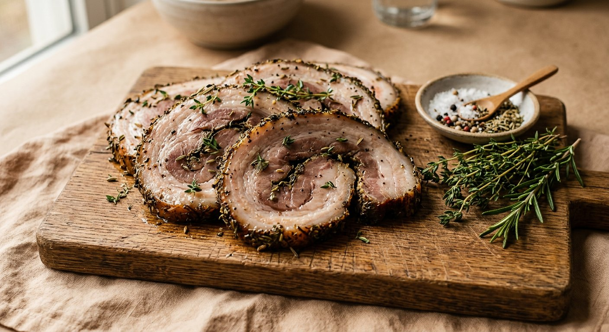
Porchetta-Infused Bacon 50–70 g/pie (1 cm cubes): Pre-sear 3–4 mins dry, drain fat, scatter pre-bake over Fontina/Mozzarella, finish with Hot Honey.
Marinated Smoked Turkey Bacon
Marinated Smoked Turkey Bacon 50–70 g/pie: Wiped dry of excess oil, placed over cheese pre-bake for caramelized smoky edges.
Prosciutto Crudo (Strictly Post-Oven)
Prosciutto Crudo 40–60 g/pie (3–5 ribbons): Temper 10 mins outside fridge and drape loosely over hot pizza after baking with Burrata, Arugula, and lemon zest.
Mortadella with Pistachio & Stracciatella
Mortadella, Pistachio & Stracciatella 50–70 g ruffled slices: Applied strictly post-oven over white pizza with 60–80 g cold Stracciatella, 8–10 g crushed pistachios, and lemon zest.
Nduja (Spreadable Calabrian Chili Pork)
Nduja 30–50 g/pie: Dot small ½-tsp morsels pre-bake so spicy pork oil melts into the sauce; cool post-oven with cold Stracciatella and basil.
Smoked Alpine Speck
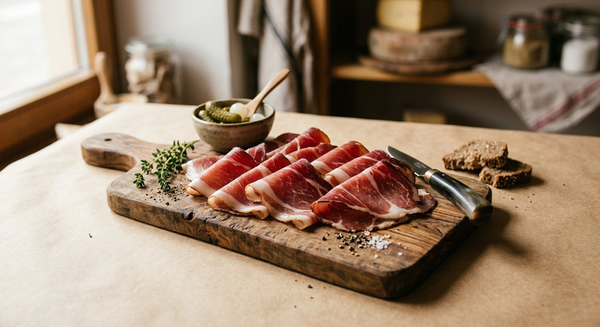
Speck 40–60 g/pie: Either crisp 2–3 mins pre-bake alongside mushrooms/Taleggio, OR drape silky raw ribbons post-oven.
Soppressata / Spicy Natural-Casing Salami
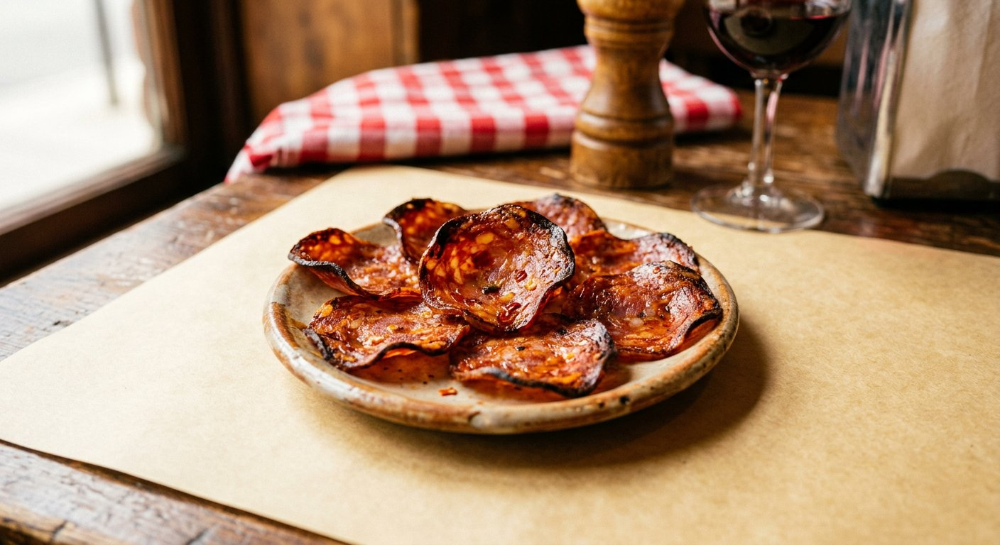
Soppressata / Spicy Salami 40–70 g/pie (8–12 non-overlapping slices): Pre-bake on top of cheese so edges cup and char; finish with lemon Ricotta + Hot Honey.
Level-Up Pizzeria Cheeses (7 Essentials)
Burrata & Stracciatella (Strictly Post-Oven)
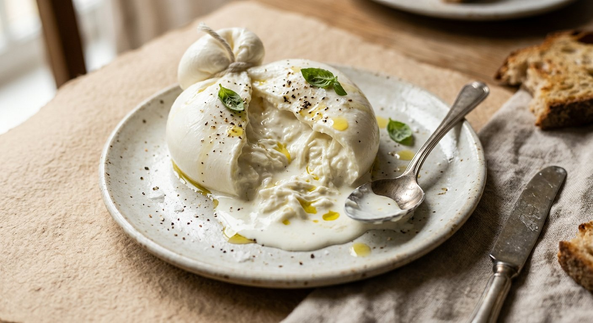
Burrata & Stracciatella 1 whole 100–125 g Burrata or 60–80 g Stracciatella: Temper 20 mins out of fridge and spoon strictly onto finished hot pizza.
Taleggio (Deep Washed-Rind Melt)
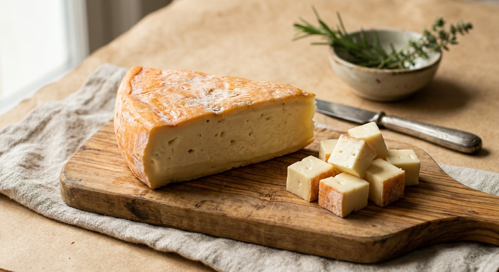
Taleggio 50–70 g rindless cubes: Scatter pre-bake alongside Mozzarella and roasted mushrooms.
Fontina (Nutty Alpine Stretch & Frico)
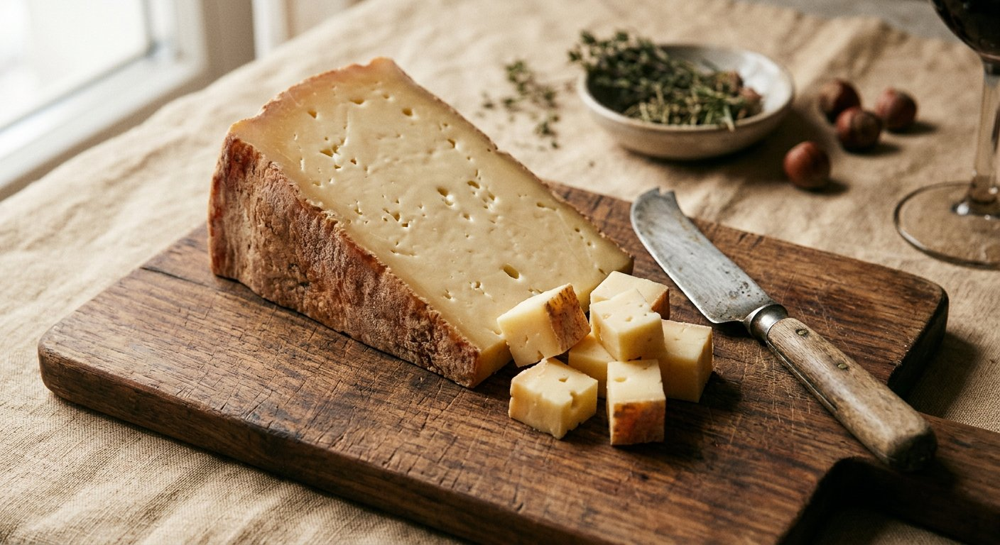
Fontina 50–80 g cubes: Rind removed, paired 50/50 with Mozzarella (featured in our Detroit-Style Pan Pizza).
Smoked Scamorza / Smoked Provola
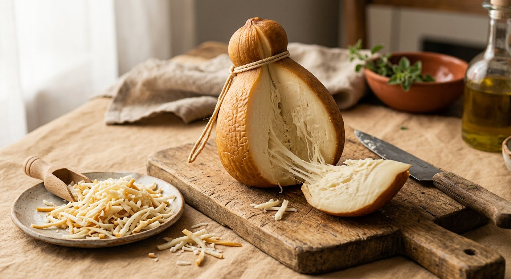
Smoked Scamorza / Provola 60–80 g shredded/cubed: Natural woodsmoke pull — phenomenal 50/50 with Mozzarella under marinated turkey bacon.
Gorgonzola Dolce (Restrained Blue Luxury)
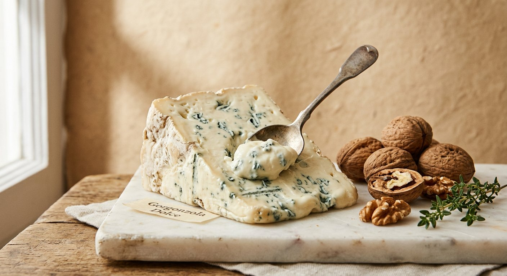
Gorgonzola Dolce 25–40 g tiny dollops: Paired with Speck, walnuts, fig/pear, and honey.
Whipped Lemon Ricotta
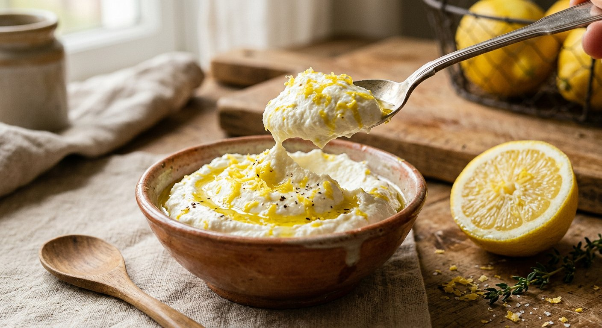
Whipped Lemon Ricotta 80–100 g drained Ricotta whipped 30s with zest of ½ lemon, pinch of salt & 1 tsp olive oil: Dollop cold post-oven over spicy Soppressata or turkey bacon.
Low-Moisture Mozzarella + Pecorino Romano
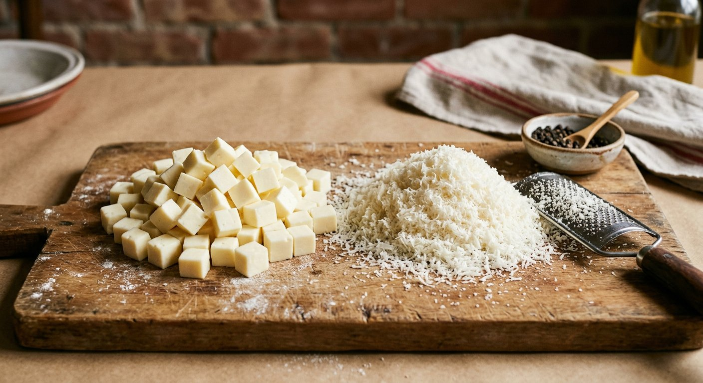
Mozzarella & Pecorino Romano 80–100 g Mozzarella + 10–15 g Pecorino pre-bake (including crust rim) + 5 g post-bake for sharp savory depth.
Eight Ready-to-Fire Signature Builds
1. Signature Smoky Turkey: 70 g sauce + 50 g Fontina + 50 g Mozzarella + 60 g Smoky-Spicy Turkey Bacon + 30 g caramelized onion → Hot Honey & fresh thyme.
2. Roman White Guanciale: White base + 70 g Mozzarella + 70 g rendered Guanciale + 15 g Pecorino → 5 g Pecorino & cracked black pepper.
3. Nduja & Cold Stracciatella: 60 g sauce + 80 g Mozzarella + 30 g Nduja → 70 g cold Stracciatella, basil & olive oil.
4. Prosciutto & Burrata: Light 50 g sauce + 70 g Mozzarella → 50 g Prosciutto, whole centered Burrata, Arugula & lemon zest.
5. Mortadella & Pistachio: White base + 60 g Mozzarella → 70 g Stracciatella, 60 g ruffled Mortadella, 10 g pistachios & lemon zest.
6. Forest Mushroom & Taleggio: White base + 60 g Mozzarella + 60 g Taleggio + 80 g seared mushrooms → parsley & drops of truffle oil.
7. Soppressata & Whipped Lemon Ricotta: 70 g sauce + 80 g Mozzarella + 50 g Soppressata → dollops of Whipped Lemon Ricotta, basil & Hot Honey.
8. Speck, Gorgonzola & Walnut: White base + 70 g Mozzarella + 50 g crisped Speck → 30 g Gorgonzola Dolce, 10 g toasted walnuts & honey.
Storage & 5 Classic Mistakes to Avoid
Never cook Burrata, Stracciatella, Prosciutto, or Mortadella in the oven; always wipe excess marinade oil off turkey; reduce sauce salt whenever stacking salty Pecorino + cured pork; and stick strictly to 2–3 stars per pie (paired with our Neapolitan Pizza).